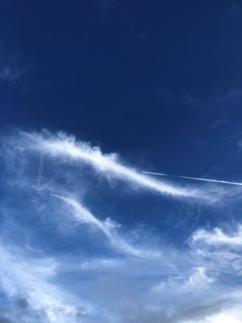
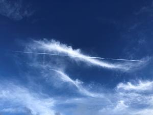
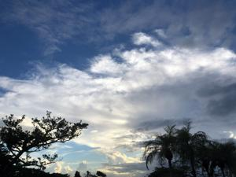

うるがいの話 ある日
最新: 公式アカウント【うるがいの話 ある日】とは 一日だけのプログです
『うるがいの話』の最新一日だけのプログで、通信料が少なく経済的だ。カニの画像をクリックすると全ての日付が載る『うるがいの話』サイトを表示します
|
|
【うるがいの話】 うるがい(ｳﾙｶﾞｲ urugai)とは、『もずくがに』の名前でとても大きくなります。 |
|---|---|
|
|
【カミマヤーの話】 猫のことを方言でマヤーといいます。カミマヤー（kamimayaa）とは、神の猫のことです。 |
|
【たながぁの音楽】 たながぁ（ﾀﾅｶﾞｰ tanagaa）とは手長えびのことで、何種類かあり大きいのは車 エビぐらいになります。 |

|
【ぶながぁの話】 ぶながぁ(ﾌﾞﾅｶﾞｰ bunagaa)とは、赤い髪の毛、赤い身体、そして身長は１ｍ２０ｃｍ ぐらい、川の蟹を食べているの目撃された。場所は沖縄県国頭郡大宜味村のと ある村僕の隣近所に住んでいる爺さんから、聞いた話です。 |
|
|
【ギーマの話】 ギーマ(giima)とは、山原の里山に咲くスズランに似た、 花を付けます。実は食べられます、 気が付くと口の周りが紫になっています。 |
2022年09月26日 (月）公式アカウント
17:48
  
いつもお世話になっております。
本日は、「Augusta Camp 2022 スペシャルオンラインライブ」
のご案内でご連絡いたしました。
ＬＩＮＥから保険会社のトークが、入り込んできた。ほうほう、ＬＩＮＥをい
じった成果は、このためだったのか・・・・。トークに貼り付けてあったＵＲ
Ｌから、ライブの申し込みをする。申込のフォームに、『ご紹介いただける方
』の入力があり、そんな人はいないので止めようかと思ったが、入力が必須条
件でないことに気づき、無事申込を終える。オンラインライブってどんなもの
か、興味深々である。おかげ様で子供たちとはＳＭＳをやめ、ＬＩＮＥを使っ
てトークや、電話を使っている。
車検が、１１時頃終わったと連絡があった。水漏れが起きた、助手席の錆止め
に４万ほど、消耗した部品の交換などしめて７万６千円ほど。ついでに、車体
に見えた赤さびを見えなくする塗料を施してもらった（タダになっていた）。
１７時４４分 ビットコインの総資産 ￥７、９８２↑